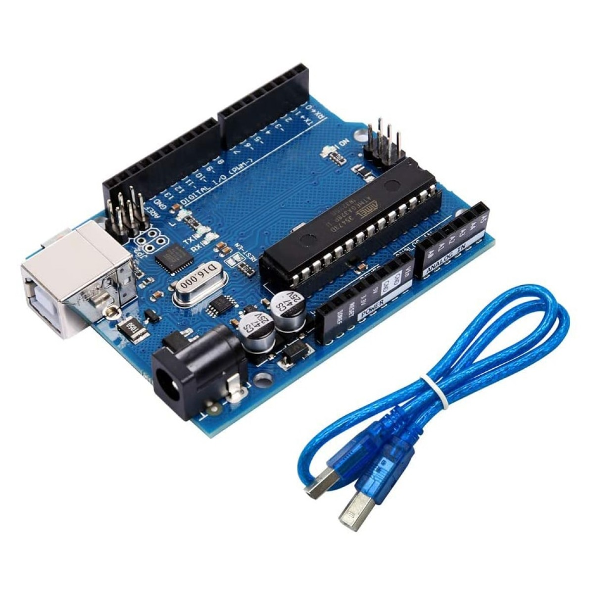
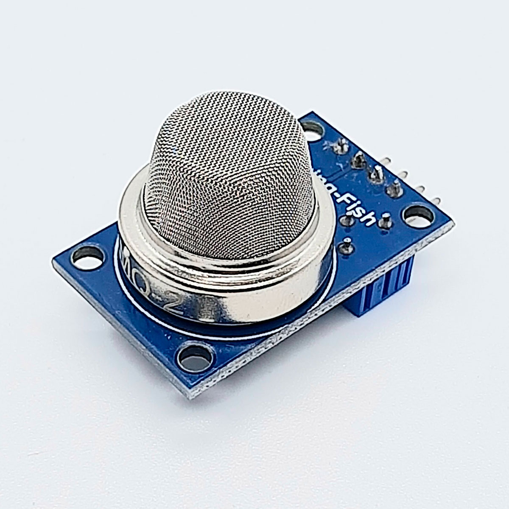
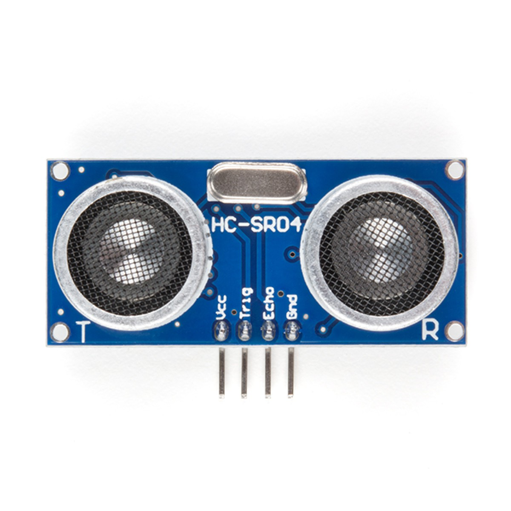
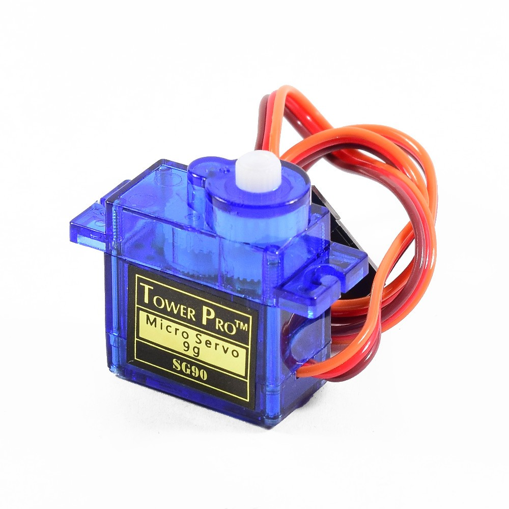
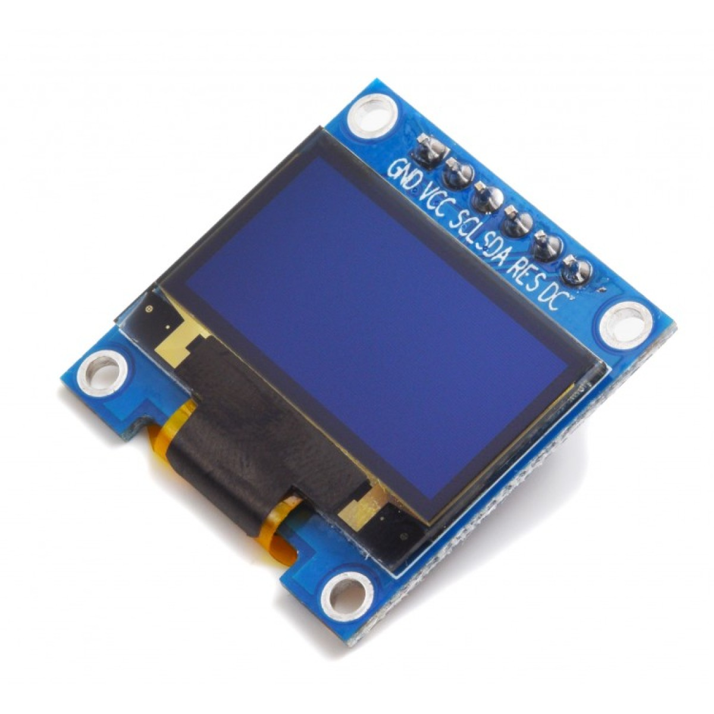
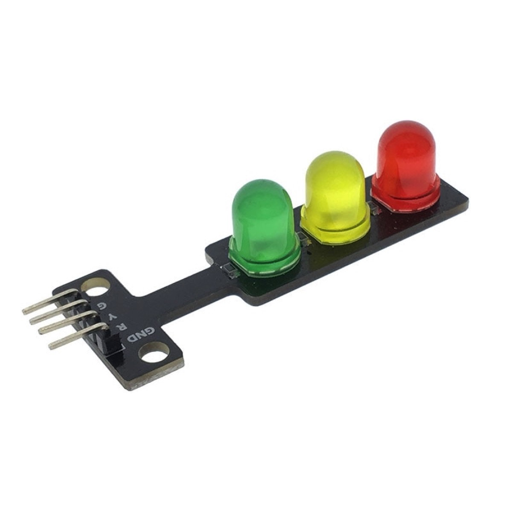
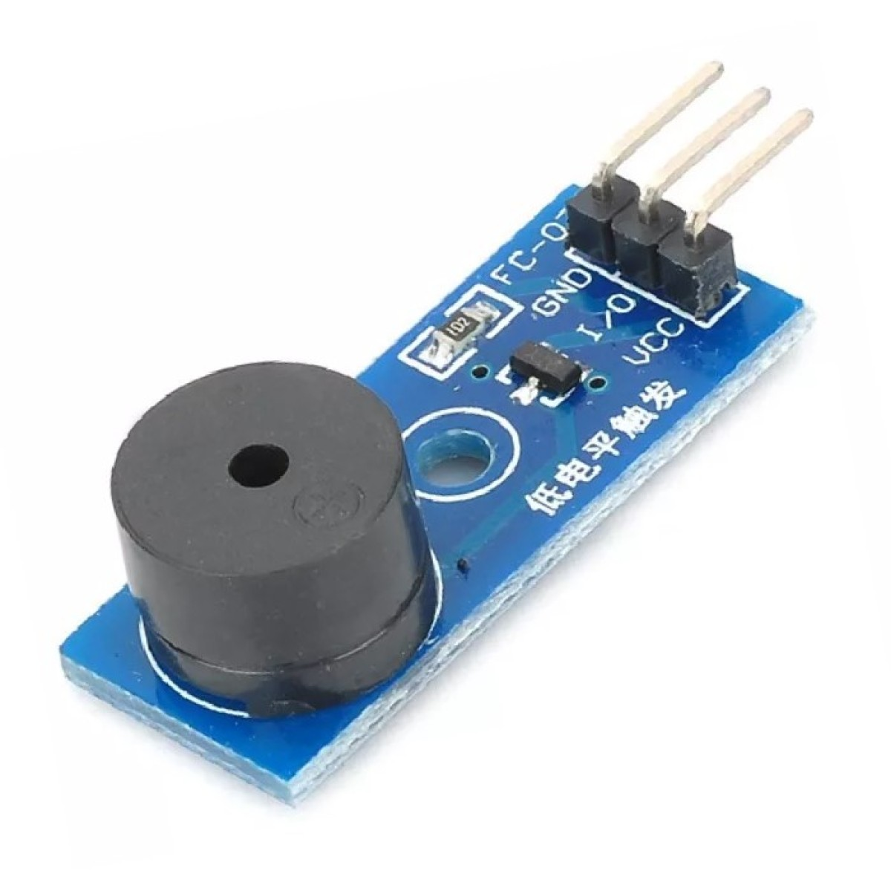
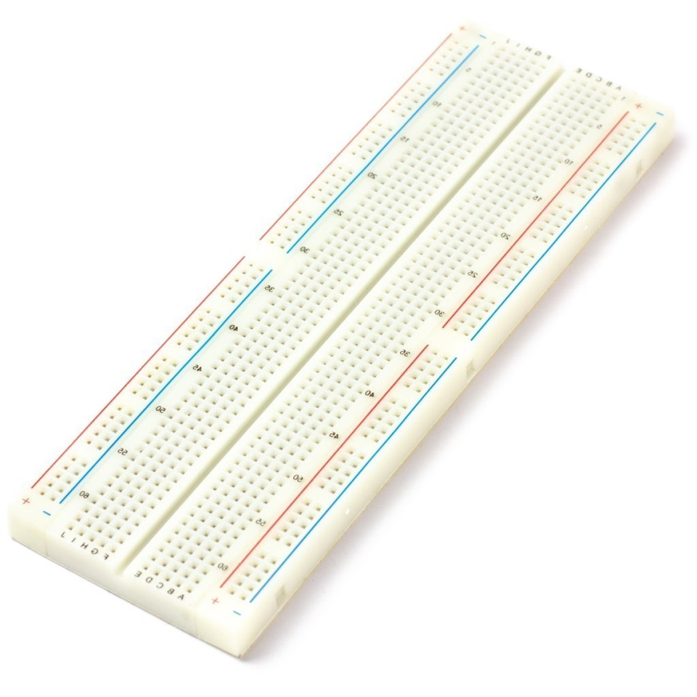
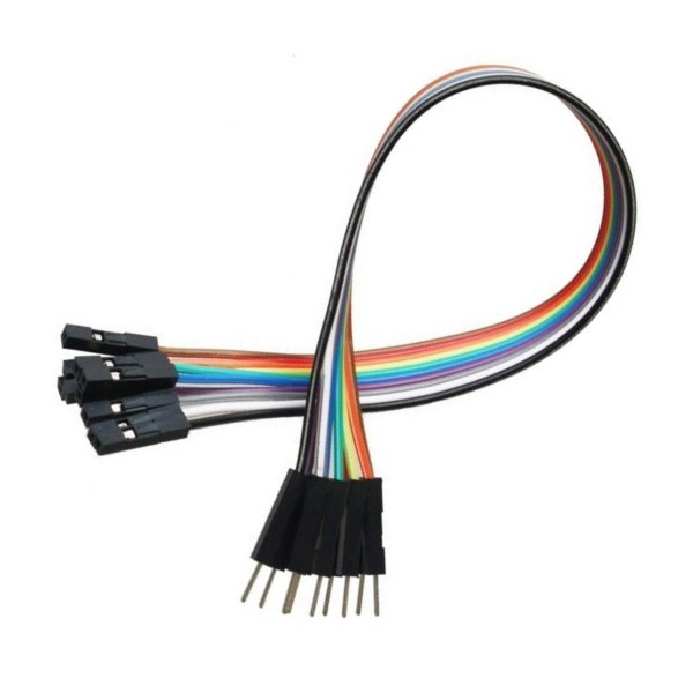

Proyecto Electrónica Digital
El presente proyecto describe el diseño e implementación de un sistema de detección y monitoreo de la calidad del aire basado en el sensor de gas MQ-2, analizado desde la perspectiva de la electrónica digital. A diferencia de los sistemas puramente analógicos, la base de este dispositivo reside en la conversión analógico-digital (ADC), el procesamiento de señales discretas y la transmisión de datos binarios mediante protocolos de comunicación.
El objetivo primordial es comprender cómo un microcontrolador muestrea y cuantifica las variaciones de voltaje generadas por la presencia de gases en el entorno (tales como dióxido de carbono y gas metano) para procesarlas como datos digitales precisos. Se hace especial énfasis en la interfaz del hardware con un software desarrollado en el entorno de Processing, diseñado para la visualización gráfica en tiempo real de los niveles de calidad del aire. Asimismo, se analiza la gestión de energía y la generación de señales digitales (como el PWM) necesarias para accionar componentes mecánicos, como servomotores, que permiten ampliar el área de muestreo del sensor.
Principios de Electrónica Digital y Processing
Captura Digital de Distancia (HC-SR04)
El microcontrolador genera un pulso de disparo digital (TRIG) y mide la duración del pulso de retorno digital (ECHO) utilizando un temporizador. El tiempo capturado se convierte en un valor digital proporcional a la distancia para su posterior procesamiento.
Procesamiento Digital de Señales (DSP) en el MCU
El código del microcontrolador implementa un filtro de mediana para procesar las lecturas digitales de distancia. Almacena 3 muestras consecutivas en una matriz digital, las ordena y selecciona el valor central (la mediana), descartando picos de ruido y lecturas erróneas.
Protocolo de Comunicación UART y Processing
Los datos de telemetría procesados se empaquetan y transmiten a la PC a través de un enlace UART asíncrono a 115200 baudios. La aplicación Processing escucha activamente el puerto serial para leer, analizar y visualizar los datos en tiempo real.
Control de Actuadores Digitales (LEDs)
El microcontrolador controla el estado (ENCENDIDO/APAGADO) de cada LED en el módulo de semáforo mediante niveles lógicos digitales (ALTO/BAJO) en sus pines de salida. Los comandos de Processing pueden enviarse a través de UART para controlar los LEDs.
Alimentación y Estabilidad de Voltaje
Un regulador lineal de voltaje (LDO) en la placa Arduino convierte de forma segura los 9V inestables de la batería portátil en una línea estable de 5V, fundamental para la precisión de la conversión ADC y la confiabilidad de la comunicación serial.
Generación de Señal PWM Digital para Escaneo
El microcontrolador genera una señal PWM digital para controlar la posición angular del servomotor SG90. La duración del pulso digital determina el ángulo de barrido. Processing controla el ángulo deseado a través de UART.
Conversión Analógico-Digital (Sensor MQ-2)
Las variaciones de voltaje continuo generadas por la detección de gas en el sensor MQ-2 son muestreadas por el convertidor analógico-digital (ADC) del microcontrolador. Esta etapa cuantifica la señal en valores binarios discretos (0-1023) para su análisis algorítmico y visualización en Processing.
Comunicación Bus I2C (Pantalla OLED)
La telemetría local se despliega transmitiendo tramas de datos digitales a la pantalla OLED mediante el protocolo de comunicación serie síncrono I2C. A través de las líneas SDA y SCL, el microcontrolador renderiza información visual de forma paralela a la interfaz principal.
Arquitectura del Hardware
La Electrónica Electrónica Tetsa. Parte téorica del proyecto. Descarga el pdf con la información importante de los componentes electrónicos utilizados en este proyecto de Arduino.

Arduino UNO R3
Microcontrolador ATmega328P. Gestiona interrupciones, lógica de estados e I/O digitales.

Sensor MQ-2
Sensible a GLP, i-butano, propano, metano, alcohol, hidrógeno y humo.

Sensor HC-SR04
Transductor acústico emisor y receptor de ondas de alta frecuencia para medir la distancia.

Servomotor SG90
Actuador electromecánico. Proveé el movimiento de 180 grados para el escaneo radial.

Pantalla OLED 0.96"
Display matriz SSD1306. Despliega telemetría local de distancias, ángulos y métricas.

Módulo Semáforo LED
Reflejan visualmente la cantidad de objetos y la presencia estricta de intrusos en movimiento.

Zumbador Pasivo
Actuador acústico programado para la generación ininterrumpida de alarmas dinámicas.

Protoboard
Placa electrónica que usaremos para el prototipado de circuitos y conexiones.

Cables Jumpers
Dispositivo que puede conectarse o desconectarse para cambiar los ajustes o configuración.
Software Processing
IDE y lenguaje de programación abierto enfocado en el diseño visual e interfaces interactivas.